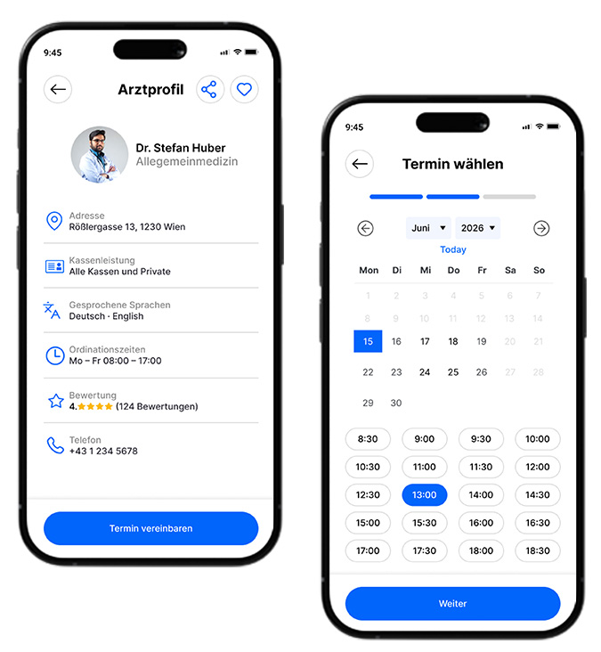
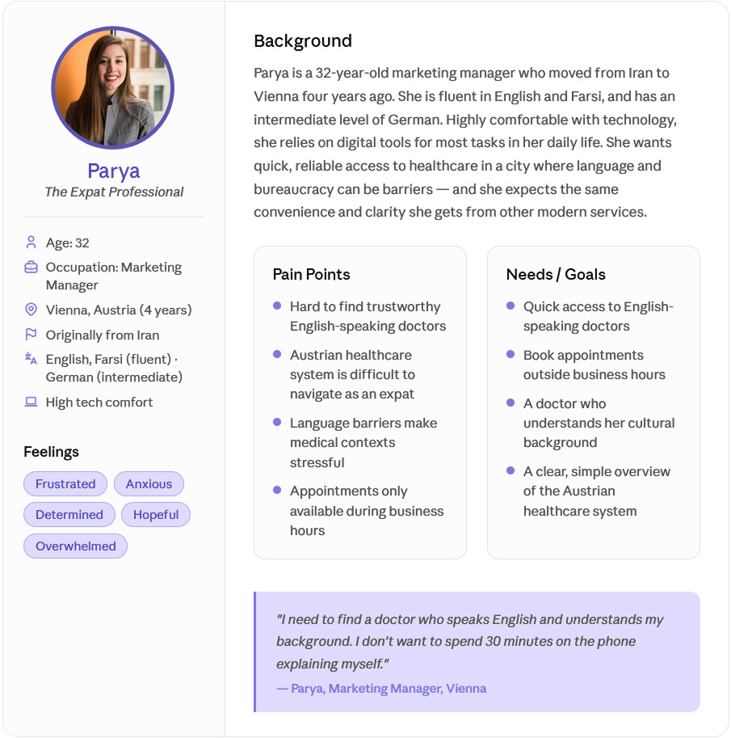
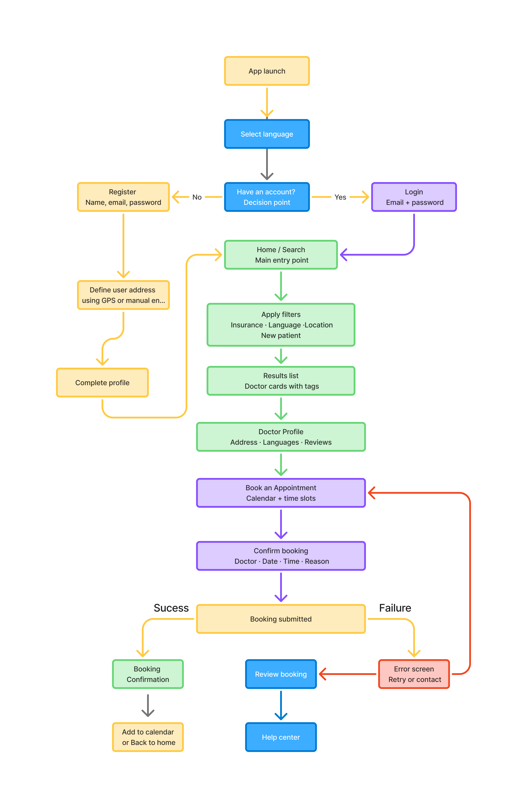
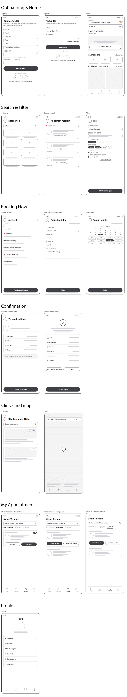
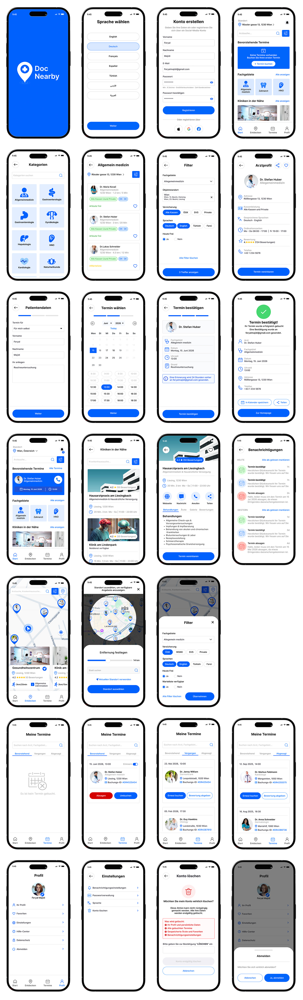
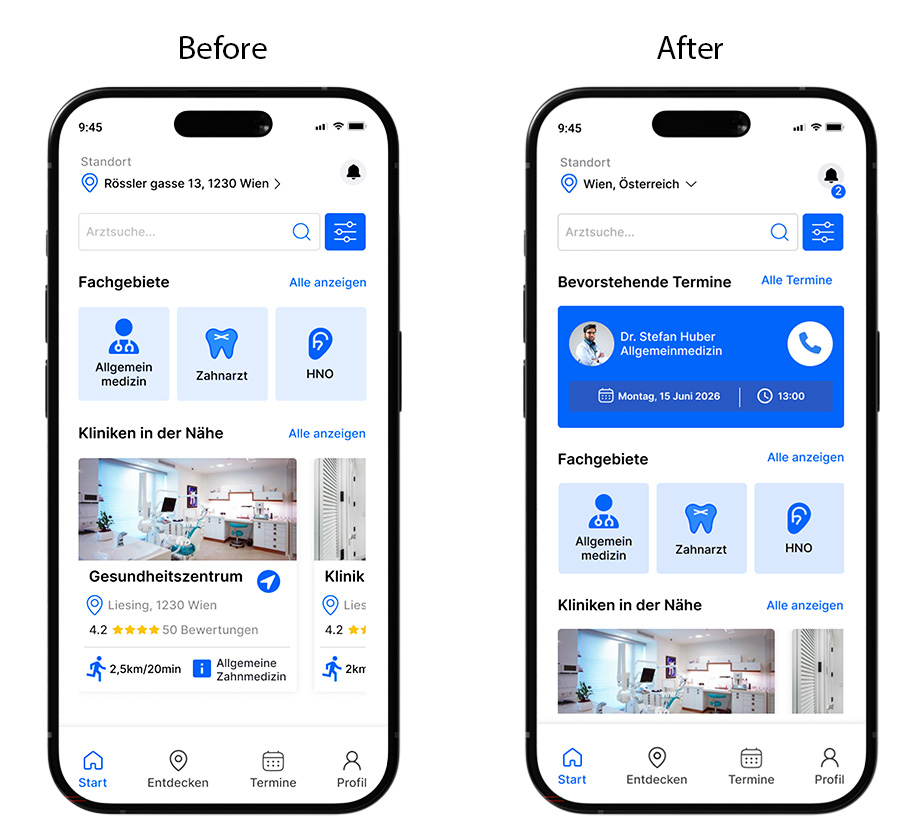

DocNearby
Healthcare Discovery & Appointment Booking Mobile App
Timeline
May - June 2026
Tools
Figma, Figjam
Role
UI/UX Design, Research, Personas, User Flows, Wireframing, Prototyping, Design System, Visual Design

Project overview
DocNearby is a mobile application that helps users easily find, compare, and book appointments with general practitioners, specialists, clinics, and healthcare providers based on their location and personal preferences. The app is designed for anyone looking for healthcare services nearby, whether they have recently moved to a new neighborhood, are searching for a doctor who accepts their health insurance, or need a specialist close to home or work. Users can filter healthcare providers by specialty, distance, accepted insurance plans, spoken languages, ratings, and availability, making it easier to find the most suitable option.
Problem
Users face several significant challenges when accessing healthcare services in Austria, which make the process difficult to navigate:
- Language Barriers: Hard to understand German medical terms. Expats prefer finding doctors who speak English or their native language.
- Insurance Confusion: It is unclear which doctors accept a patient's specific insurance provider.
- Outdated Processes: Relying on phone calls makes booking appointments slow and frustrating.
- Hidden Information: A lack of peer reviews and clear details makes it hard to trust a doctor's quality.
- Location Hassles: Finding nearby general doctors or specialists close to home or work is too difficult.
As a result, finding the right doctor within the healthcare system can be a time-consuming, fragmented, and uncertain experience for users.
Solution
A unified mobile platform that addresses these challenges by combining intelligent search, comprehensive provider profiles, and a streamlined booking system. DocNearby simplifies the healthcare experience by offering advanced filters for specialty, location, insurance coverage, operating hours, and multi-language support (including the user's native language and English). By integrating patient reviews and transparent provider information, DocNearby makes selecting and booking a doctor simple, transparent, and efficient.
The Design Process

Empathize
By analyzing the mental model of expats in Vienna, I identified key insights into their needs and behaviors. To humanize these findings, I developed a user persona.
User Persona:
Parya represents an expat professional who struggles with bureaucracy and language barriers. Her pain points—such as difficulty finding English-speaking doctors and restricted office hours—directly shaped the core features of DocNearby.

Mental Flow:
Users follow a specific path: "What is nearby?" → "Who can treat my condition?" → "Can I book quickly?"
Key Decision Factors:
Doctor reputation, language compatibility, insurance coverage, and real-time availability.
Competitive analysis:
The products analyzed below are all related to finding healthcare providers and managing medical appointments in Austria. Comparing these products provided key insights to clearly show the factors that contribute to their success or failure in meeting expat needs.
Challenges:
They do not support seamless interactive map navigation, lack intuitive multi-language filtering for non-German speakers, and often present a cluttered user experience filled with advertisements. Additionally, they lack up-front transparency regarding specific public insurance (ÖGK) vs. private selection and do not provide optimized localized radius searches tailored tightly for Vienna's individual districts.
Strengths
They offer a highly comprehensive database of active medical professionals in Austria, supported by extensive repositories of authentic patient reviews to establish provider credibility. Furthermore, they utilize powerful, real-time automated appointment booking algorithms with instant calendar syncing and automated push notifications to effectively eliminate missed time slots.
Define
Throughout the definition phase, I established clear guidelines to address the identified pain points, synthesizing our core goals into four main design principles:
- Clarity First: Designing interfaces that are instantly understandable, even for non-native German speakers.
- Speed & Efficiency: Minimizing the steps required to book an appointment.
- Trust & Transparency: Providing comprehensive provider information, including insurance and language capabilities, upfront.
- Accessibility: Ensuring compliance with WCAG 2.1 AA standards for typography, color contrast, and touch targets.
Ideate
During ideation, I mapped out the structural framework and navigational pathways to ensure the solution feels natural and intuitive.
Information Architecture:
The app features five main sections accessible via bottom tab navigation, with map-based discovery taking a central role:
- Start (Home): Quick access to general search and featured providers.
- Entdecken (Map): An interactive map view where users can define their location and filter results by radius (e.g., up to 14 km) to find the nearest clinics.
- Termine (Appointments): A unified view to manage upcoming, past, and cancelled appointments.
- Profil (Account): Management of personal profiles, preferences, and settings.
Key User Flows:
- Discovery & Search Flow: View providers on the interactive map → Select results from the bottom cards → View provider details.
- Appointment Booking Flow: View availability → Select date and time → Instant confirmation.
- Appointment Management Flow: Navigate to appointments → Filter by status → Reschedule or cancel.

Prototype
I translated the ideated flows into physical and digital states to simulate and refine the real-world application experience.
Low-Fidelity Wireframes:
I began with paper sketches and low-fi digital wireframes to establish layout priorities. Onboarding fields were minimized to reduce drop-offs, filter screens were given clear hit states for quick selection, and doctor cards were structured to show language and insurance tags instantly.

Interactive Prototype:
I built a high-fidelity interactive prototype to test user navigation streams. This phase introduced vital functional elements, such as a single-selection specialty dropdown, a dynamic booking calendar, a mandatory booking data verification check ("Confirm booking"), and system fallback screens to handle alternative paths gracefully.

Style Guide:
For the color palette, the vibrant blue color I've chosen is meant to give a trustworthy and professional feeling that connects to medical reliability, care, and technology, while the clean white and soft grays provide a clear, minimalist interface that reduces cognitive load. Together, the colors balance clinical credibility and modern clarity, helping expats feel calm and fully supported while navigating the local healthcare system. The logo combines both a location map pin and a medical cross to show that the application is about discovering and connecting with nearby healthcare providers with precision. The concentric ripples at the base of the pin also represent localized proximity, emphasizing the app’s focus on radius-based, accessible community searches.

Test
Usability test:
The testing consists of four participants all who are expats living in Vienna. They were asked to do two tasks: Filter for a local general practitioner and complete a multi-step appointment booking. The goal is to see how easily the users navigate through the application, get feedback on the look, feel, and functionality, and lastly identify any points of confusion in the layout and flow.
Participants felt the overall look was visually appealing and clean. It was simple and efficient to navigate through the categories and the filtering process especially. The main point of confusion with all participants was when they reached the initial summary screen, the progress bar showed completion but it did not explicitly confirm if the booking was finalized which leaves the user guessing if their appointment was actually secured with the clinic.
Updated user flow:
I've updated the original user flow to show that the user can verify their booking status more easily directly from the Home screen. Originally, the user was only able to view booking updates inside the dedicated appointments tab, but with further testing it was apparent they wanted to see their upcoming appointment details immediately upon opening the app considering there was a clear need for instant validation and peace of mind on the main dashboard as well.

Conclusion:
Through this design process, I learned that transparency, accessible location-based information, and clear filtering are the ultimate keys to a successful and trustworthy healthcare product.